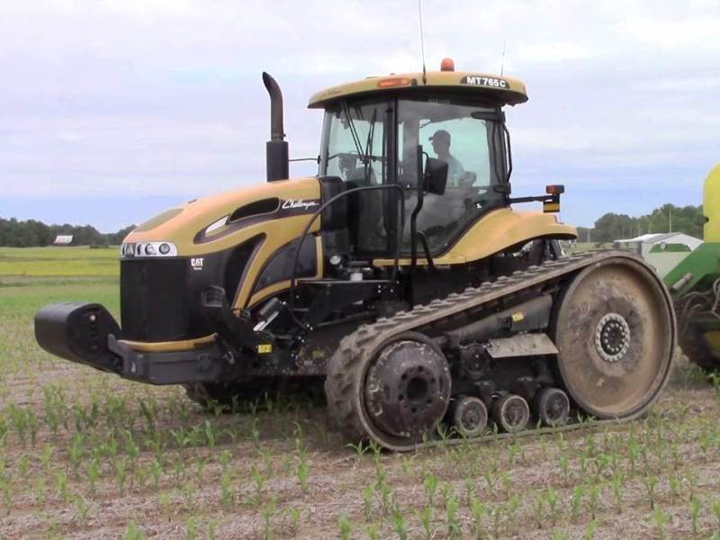

Challenger MT765C

Caterpillar Challenger MT765C – це високотехнологічний гусеничний трактор, який належить до однієї з найуспішніших серій у своєму класі. Завдяки системі гусеничного ходу Mobil-trac, трактор реалізує колосальне тягове зусилля з мінімальним пробуксовуванням, що робить його ідеальним для роботи на пухких ґрунтах та схилах.
Модель вирізняється плавною роботою трансмісії Powershift (16/4) та інтелектуальною системою управління Tractor Management Center, яка дозволяє оператору контролювати всі параметри машини через один монітор. Кабіна преміум-класу забезпечує відмінну шумоізоляцію та круговий огляд, а малий тиск на ґрунт дозволяє значно раніше виходити в поле весною, не пошкоджуючи його структуру.
| Параметр | Значення |
|---|---|
| Клас тяги | 5.0 |
| Тип ходової частини | гусеничний |
| Колісна формула | гусеничний хід (Mobil-Trac) |
| Тип рами | жорстка конструкція |
| Основне призначення | енергоємні с/г роботи: глибоке розпушування, оранка, посів широкозахватними комплексами |
| Параметр | Значення |
|---|---|
| Модель | Caterpillar C9 ACERT |
| Тип двигуна | чотиритактний дизель з турбонаддувом та інтеркулером |
| Спосіб охолодження | рідинне |
| Розташування циліндрів | рядне, вертикальне (6 циліндрів) |
| Діаметр циліндра/хід поршня | 112 мм / 149 мм |
| Робочий об’єм | 8,8 л |
| Номінальна потужність | 239 кВт (320 к.с.) |
| Номінальні оберти | 2100 об/хв |
| Система пуску | електростартер |
| Питома витрата палива | 197-205 г/кВт·год |
| Параметр | Значення |
|---|---|
| Муфта зчеплення | мокра багатодискова |
| Тип КПП | Powershift (з електронним керуванням) |
| Кількість передач | 16 вперед / 4 назад |
| Кількість діапазонів | перемикання під навантаженням без розриву потоку |
| Діапазон швидкостей (вперед) | 2,7 – 39,6 км/год |
| Діапазон швидкостей (назад) | 3,7 – 14,9 км/год |
| Вал відбору потужності | задній незалежний, 1000 об/хв |
| Номер діапазону | Номер передачі | Теоретична швидкість, км/год | Передаточне число трансмісії | Тягове зусилля, кН |
|---|---|---|---|---|
| I (Технологічний) | 1 | 2,7 | 208,4 | 145,00 |
| I (Технологічний) | 2 | 3,3 | 170,5 | 138,00 |
| I (Технологічний) | 3 | 4,0 | 140,7 | 132,00 |
| I (Технологічний) | 4 | 4,8 | 117,2 | 115,00 |
| II (Робочий) | 5 | 5,8 | 96,9 | 95,50 |
| II (Робочий) | 6 | 7,1 | 79,2 | 78,10 |
| II (Робочий) | 7 | 8,5 | 66,1 | 65,20 |
| II (Робочий) | 8 | 10,3 | 54,6 | 53,80 |
| II (Робочий) | 9 | 12,4 | 45,3 | 44,50 |
| II (Робочий) | 10 | 14,9 | 37,7 | 37,10 |
| III (Транспортний) | 11 | 18,1 | 31,1 | 30,50 |
| III (Транспортний) | 12 | 21,7 | 25,9 | 22,10 |
| III (Транспортний) | 13 | 26,1 | 21,5 | 16,80 |
| III (Транспортний) | 14 | 31,4 | 17,9 | 12,40 |
| III (Транспортний) | 15 | 35,2 | 16,0 | 8,50 |
| III (Транспортний) | 16 | 39,6 | 14,2 | 5,20 |
Примітка:
КПП Powershift забезпечує перемикання всіх 16 передач без розриву потоку потужності, конструктивно вони поділені на три логічні діапазони для оптимізації польових та транспортних робіт.
Діапазон I (Передачі 1–4): Призначений для виконання найбільш важких операцій, що потребують максимального тягового зусилля (до 145 кН). Використовується для первинного обробітку ґрунту та роботи в складних умовах.
Діапазон II (Передачі 5–10): Основний робочий діапазон для більшості сільськогосподарських операцій: оранки, культивації та посіву. Швидкості від 5,8 до 14,9 км/год дозволяють підібрати оптимальний режим для будь-якого агрегату.
Діапазон III (Передачі 11–16): Використовується для перегонів трактора та транспортування вантажів. Максимальна швидкість сягає 39,6 км/год, при цьому тягове зусилля значно знижується.
Завдяки гусеничному ходу Mobil-Trac, трактор реалізує високі тягові показники на низьких швидкостях з мінімальним буксуванням та тиском на ґрунт.
| Параметр | Значення |
|---|---|
| Тип коліс | гусенична стрічка (Mobil-Trac) |
| Марка гусениць | ширина 457 мм / 635 мм / 762 мм (стандарт) |
| Радіус ведучого колеса | 0,48 м (зірочка) |
| Кількість опорних котків | 5 з кожного боку |
| Система підвіски | Opti-Ride (індивідуальна підвіска котків) |
| Режим роботи | Витрата, л/год |
|---|---|
| Під час роботи з навантаженням | 44,0 – 56,5 кг/год |
| Під час холостих переїздів | 12,0 – 16,0 кг/год |
| Під час зупинок (холостий хід) | 3,5 – 4,5 кг/год |
| Параметр | Значення |
|---|---|
| Маса експлуатаційна | 14100 кг |
| Довжина / Ширина / Висота | 5850 мм / 3000 мм / 3400 мм |
| Колія / База | 2032–2286 мм / 2438 мм |
| Дорожній просвіт | 380 мм |
| Мінімальний радіус повороту | 0 м (розворот на місці) |
| Тип навісного пристрою | задній гідравлічний, IV категорії |
| Об’єм паливного баку | 447 л |
| Параметр | Значення |
|---|---|
| Особливості кабіни | Pinnacle View, панорамне скління, клімат-контроль |
| Гальма | гідравлічні дискові мокрого типу |
| Електрообладнання | акумулятори 12 В (2 шт.), напруга бортмережі 12 В |
| Начіпний пристрій | вантажопідйомність – 8500 кгс |
| Гідросистема | продуктивність – 164 л/хв (опція 223 л/хв) |